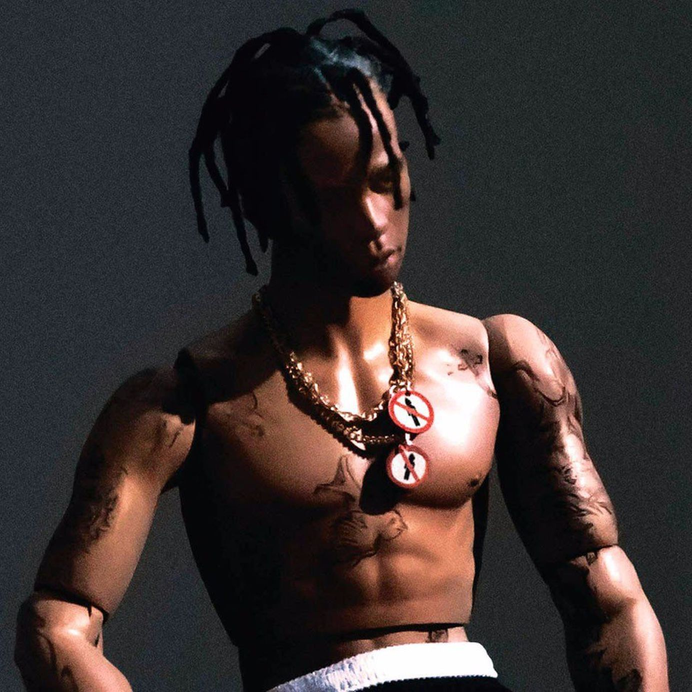

Days Before Rodeo
Released in August 2014. Grand Hustle Records.

Days Before Rodeo is the second mixtape released by Travis Scott and it features artists from Young Thug, Big Sean, The 1975, and Migos. Scott called it a "free album" on Twitter since it is a prequel to his first album released in the following year.
TRACKLIST: Days Before Rodeo | Mamacita | Quintana Pt. 2 | Drugs You Should Try It | Don’t Play | Skyfall | Zombies | Sloppy Toppy | Basement Freestyle | Backyard | Grey | BACC
Rodeo
Released in September 2015. Grand Hustle Records/Epic Records.
Rodeo is the debut studio album by Travis Scott. The album was supported by two singles, "3500" and "Antidote". When released, "Antidote" became his highest-charting single in the US Billboard Hot 100 at the time, peaking at number 16.
TRACKLIST: Pornography | Oh My Dis Side | 3500 | Wasted | 90210 | Pray 4 Love | Nightcrawler | Piss on Your Grave | Antidote | Impossible | Maria I'm Drunk | Flying High | I Can Tell | Apple Pie
Birds in the Trap Sing Mcknight
Released in September 2016. Grand Hustle Records/Epic Records.
Birds in the Trap Sing Mcknight is Travis Scott's second studio album. The album debuted at number one on the US Billboard 200. Production of the album was done several producers such as Vinylz, Cardo, Frank Duke, and Mike Dean.
TRACKLIST: The Ends | Way Back | Coordinate | Through the Late Night | Beibs in the Trap | SDP Interlude | Sweet Sweet | Outside | Goosebumps | First Take | Pick Up the Phone | Lose | Guidance | Wonderful
ASTROWORLD
Released in August 2018. Cactus Jack Records/Grand Hustle Records/Epic Records.

In his fourth album, Travis Scott takes his listeners on a journey to Astroworld. The rapper was inspired by the Six Flags AstroWorld theme park located in Houston, Texas that permanently closed in 2005. The album was certified triple platinum by Recording Industry Association of America.
TRACKLIST: Stargazing | Carousel | Sicko Mode | R.I.P. Screw | Stop Trying to Be God | No Bystanders | Skeletons | Wake Up | 5% Tint | NC-17 | Astrothunder | Yosemite | Can’t Say | Who? What! | Butterfly Effect | Houstonfornication | Coffee Bean